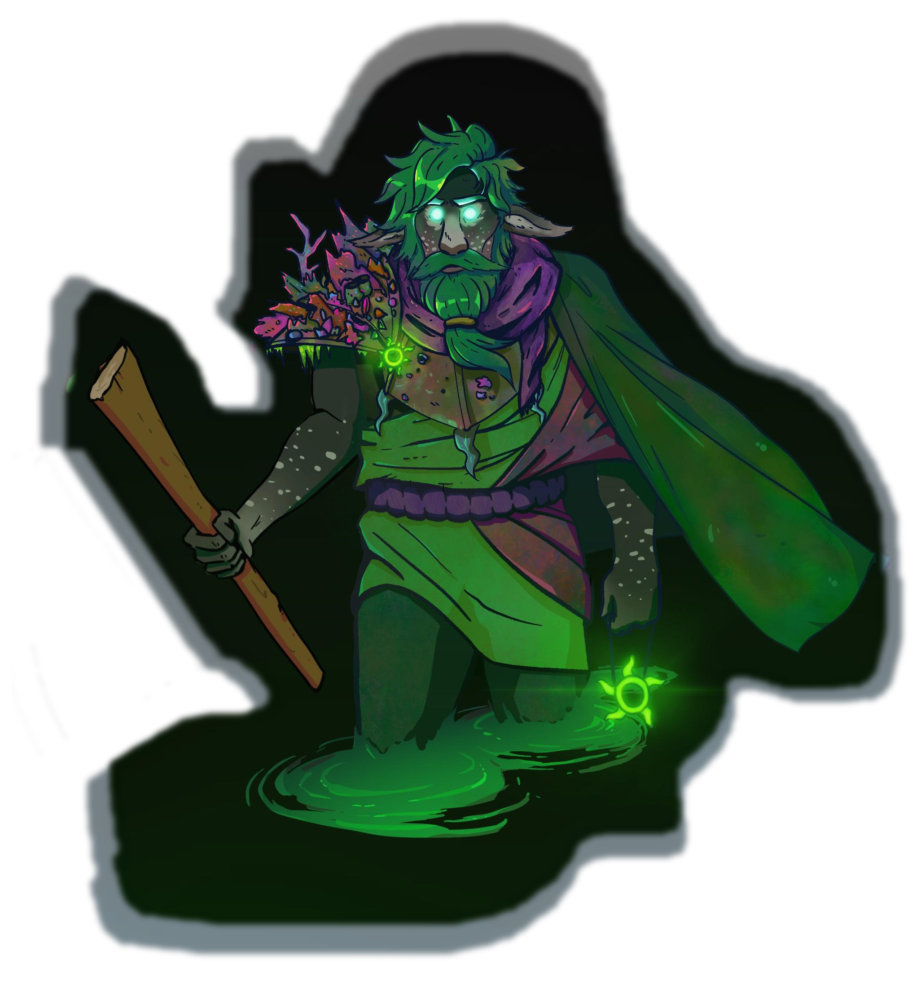
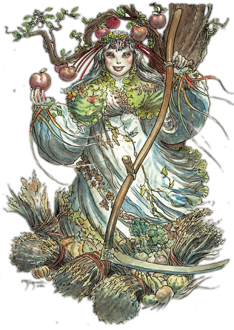

Es war ein warmer Sommermorgen in Hlontdeth. Der Geruch von Lavendel lag in der Luft und das Summen fleißiger Bienen erfüllte die morgendliche Stille. Unter den aufmerksamen Augen der Brutwächter begannen in den Nestanlagen von Hlontdeth langsam die Eier des letzten Frühlingsgeleges zu schlüpfen. Maciji war eine der ersten Yuan-Ti Reinblütler welche die Schale durchbrach und das wärmende Schimmern der Sommersonnenstrahlen, welche sich durch das scheinbar endlose Geäst der säuberlich gepflanzten Schlehen und Stechpalmen schlängelten, spürte. Auch wenn dieser Moment lange vor allem liegt, an was sie sich erinnern kann, war dieser Augenblick jedoch ausschlaggebend – nahezu schicksalhaft – für Macijis weiteren Werdegang. Während ihrer Kindheit verbrachte die kleine Reinblütlerin die meiste Zeit in den örtlichen Grünanlagen und dem königlichen Garten um die gut duftenden Blumen zu bewundern und das Wiegen der Blätter im Wind zu genießen. Maciji besuchte auch regelmäßig Extaminos' Voliere – allerdings nicht wegen der Vögel sondern viel mehr wegen der prachtvollen Bäume und exotischen Blumen welche von den Gärtnern voller Sorgfalt gepflegt wurden. Sie betrat das pompöse Vogelhaus so oft, dass sie schon fast selbst den obligatorischen Zauberspruch "Mordenkainens Schutz vor vogelähnlichen Kreaturen" gelernt hatte. Angesichts Macijis Verbundenheit zu Pflanzen und ihrem Auge für die Ästhetik der Natur war es nicht weiter verwunderlich, dass sie den Weg des Gärtnerns einschlug.
Im Gegensatz zu den üblichen Yuan-Ti-Tempelanlagen und deren Bewohnern gab es unter den primitiven Einwohnern Hlondeths, immerhin ein paar Kreaturen, welche die sensationelle Schöpfung genialer Gärtner zu schätzen wussten. Maciji hatte deswegen kein Problem Gleichgesinnte (wobei sich das „gleich“ nur auf die Wertschätzung des Schaffens schöner Gärten bezieht und keinesfalls auf den Stellenwert der Kreaturen in Macijis Weltansischt) zu finden: Die örtliche Gärtnergilde. Maciji konnte dieser aufgrund ihrer Fähigkeiten problemlos beitreten und dort einen Mentor finden: Zardin – "Der, dem sich die Wildnis beugt". Zardin war ein Firbolg, welcher das Druidenleben aufgab um seine Vorstellung von Natur und wie sie auszusehen hat in die Welt zu tragen. Unter Zardins strenger Führung wuchs Maciji zu einer bemerkenswerten Gärtnerin heran, die neben dem Umgang mit Zierblumen auch Kenntnisse in der Verarbeitung von Heilkräutern und -pflanzen erlangte. Sie war eine der talentiertesten und darum auch beliebtesten Mitglieder in der lokalen Gärtnergilde. Ihr Ruf als "Virtuosin der Gärten" eilte ihr so weit voraus, dass viele andere Einwohner Hlondeths Maciji um Rat beim Gärtnern fragten. Sogar die königlichen Hofgärtner baten sie um Hilfe beim Bepflanzen neuer Rosen- und Kamelienbeete. Regelmäßig erhielt Maciji auch Schreiben aus weit entfernten Städten und Ländern. Die Briefe beinhalteten oft Bitten um Rat oder einfach nur Bewunderung ihrer Fähigkeiten.
Auch wenn es wider ihrer Natur war primitiven Kreaturen zu helfen, war Maciji ganz anders, wenn es ums Gärtnern ging. Sie konnte – unabhängig des Gesprächspartners und ob dieser überhaupt zuhört – stundenlang über die Eleganz von akkurat gepflegten, symmetrischen Gärten oder über die stilvolle Wildheit natürlichen aussehenden Wachstums reden. Allerdings war Maciji nur eine von wenigen Yuan-Ti welche den Anmut der Natur und das Vergnügen diese nach eigenem Willen anzupflanzen zu schätzen wusste. Fast alle anderen Yuan-Ti (und auch die sonstigen, niederen Kreaturen) nahmen die sorgsam angepflanzten Blumen und Sträucher als selbstverständlich wahr und schenkten ihnen keine besondere Aufmerksamkeit. Selbst gewissenhaft gepflegte Gärten behandelten diese einfältigen Tölpel mit Gleichgültigkeit. Maciji war immer verärgert, wenn andere die Gärten unordentlich machten und die Schönheit artifizieller Natürlichkeit nicht bewunderten. Deswegen gab sie auch die Traditionen der Yuan-Ti und den Glauben an Sseth auf und wandte sich Chauntea zu. Im Gegensatz zu den friedvollen Druiden, welche Chaunteas Leitsatz ("Wachstum und Ernte sind Teil des ewigen Kreislaufs und der natürlichste Teil des Lebens. Zerstörung ohne Grund und etwas einzuebnen, ohne neu zu errichten sind Sünden. Lasse keinen Tag vergehen ohne nicht einem Lebewesen zum Gedeihen verholfen zu haben. Pflege, kümmere dich und pflanze wann immer es möglich ist. Schütze Bäume und Pflanzen, beschütze ihre Samen, so dass alles was zerstört wird auch neu wachsen kann. Kümmere dich um die Fruchtbarkeit der Erde, aber lasse die fruchtbaren Menschen sich um sich selbst kümmern. Lösche Feuer. Pflanze wenigstens jeden Zehntag eine Pflanze oder einen Samen.") auf harmonische Weise leben, möchte Maciji der ganzen Welt die Schönheit von Yuan-Ti-Hand geschaffener Natur näher bringen. Obwohl die Verehrung der Erdmutter nicht durch Gaben oder Gebete zum Ausdruck kommt, fühlt sich Maciji verpflichtet das Dogma Chaunteas zu verbreiten.
Um ihre gärtnerischen Fähigkeiten noch weiter auszubauen, es ihr zu ermöglichen, Gärten eigenständig vor der Verschmutzung durch philisterhafte Nichtsnutze beschützen zu können und die stümperhaften Banausen von der Herrlichkeit akribisch angelegter Blumenbeete zu überzeugen hatte Maciji den Plan gefasst, einen Pakt mit Yoggaa, Gärtner von Mephistopheles' Frostgarten, einzugehen. Sie hoffte mithilfe von Ritualen und Magie noch schönere Gärten gestalten zu können und die einfältigen Trottel zur Bewunderung derer zu bringen zwingen. Anstelle von Yoggaa jedoch erhörte eine schelmische Lillend namens Kelmus Macijis Gesuch und trat ihr in Gestalt von Yoggaa in Erscheinung. Kelmus, wie alle Lillendi, verabscheut ebenfalls die sinnlose Zerstörung der Natur. Auch wenn ihre Vision von "Natur", welche hauptsächlich aus natürlich und wild gewachsenen Pflanzen besteht, sich deutlich von der Macijis unterscheidet, versprach sie ihr Kräfte, die es der Reinblütlerin ermöglichen, die Schönheit des Lebens zu kultivieren. Im Gegenzug verlangte Kelmus, dass Maciji durch die Welt zieht, um eben genau diese Schönheit zu verbreiten. Voller Begeisterung, dass ihre Bitte um Hilfe erhöht wurde, stimmte die Reinblütlerin dem Vertrag ohne Widerworte zu – ein Fehler, wie sich ihr einige Zeit später herausstellte. Die "Schönheit des Lebens" von der Kelmus sprach, bezog sich nicht nur auf die Ästhetik der Natur sondern auf das Leben aller Kreaturen an sich. Eine von Macijis Aufgaben ist es also nun durch die Welt zu ziehen um Kranke und Verletzte zu heilen. Auch wenn ihr ihre neue Zauberkraft gefällt, erfüllen die Aufgaben ihrer Patronin Maciji mit Missmut. Darum ist sie auf der Suche nach einer Möglichkeit den Pakt zu beenden – oder zumindest neue Konditionen auszuhandeln – ohne dabei ihre neu erlangten Fähigkeiten zu verlieren…